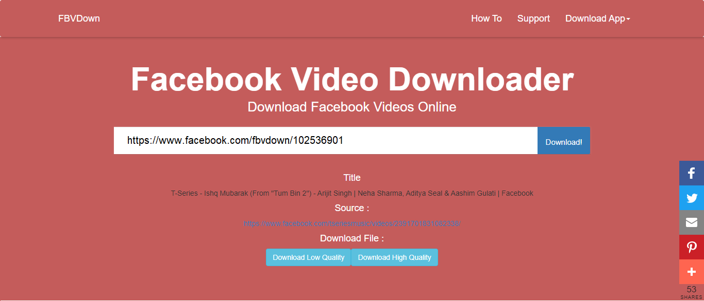

How to Download Facebook Videos Online
Did you ever want to download a video from your Facebook feed? Did you see a video on your Facebook feed and are wondering if you can download it to your hard drive? Wish to download videos from Facebook Feed in MP4 format? If yes, FBVDown is the perfect solution.
Downloading Facebook videos online has never been so easy. No software or installation is required and you can easily download the video you like from the web browser. Thanks to FBVDown, anyone with an active internet connection can download the videos from Facebook within a few seconds. FBVDown is free to use and no registration is required.
You can just follow the below-mentioned steps to easily download Facebook videos online, for free.
Step 1Play the video, then Right Click -> Show video URL. See screenshot below.
Step 2
Visit FBVDown and paste the URL of the text box provided.
If you android user Download App
This process would take a few seconds. This is the time you should not refresh or re-load the page.
Click on "Download normal quality video" or "Download HD video" (if available) to start downloading the video.

Step 4Click on > : Three dot icon and click download after your video is starting download